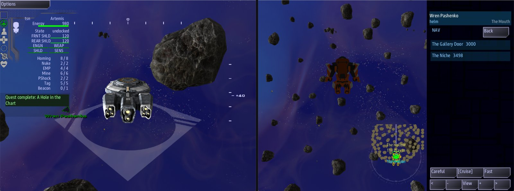

Class 5, Lecture 11 - A ruin on the map¶
What you will have at the end¶
A place in The Kestrel Verge that the crew flies into, and then leaves the ship for. It is called The Hollow. A lead sends the crew to it. At its mouth, the crew's handhelds offer them suits. One of them goes out, cuts through a fallen slab, and carries a stone bowl back aboard, and each of those is a step of your story, paid when it happens.
And the ruin remembers. Leave and come back, tonight or next week, and the slab is still cut and the bowl is still gone.

Inside The Hollow, and the handheld's Boarding Party app offering SUIT UP.You add one file to the mission, one landmark, and three steps of story. You do not write the ruin today. It is on this page, ready to paste.
The video¶
About 5 minutes. Subtitles are available in the player.
Before you start¶
- Your
MyUniversemission as Lecture 9 left it. Its six.amdfiles matchc5-09-organizing-a-big-universe\example\. sbs lint MyUniversesayscleanfor all six files.- The game closed, and the save deleted:
C:\Cosmos\data\missions\common_data\saves\universe_save_the_kestrel_verge_1.yaml.
About the ruin itself. Writing a ruin is all of Class 4: its rooms, its walls, what is in it, what cuts what. This lecture is about putting a ruin into a universe, so it hands you a small finished one, cut down from the ruin Class 4 builds in its Lecture 8. If you have taken Class 4, use your own, and read this page for the three things a universe needs of it. If you have not, paste the one here. You can take Class 4 later and come back with a better ruin.
Words for this lecture:
| Word | Meaning |
|---|---|
| Ruin | A place with rooms that a ship can fly inside. The files call it a relic |
| Entrance | The one place in a ruin marked as its way in. The offer of suits is measured from it |
| Suit | A one-person craft a crew member flies out of the ship. Going out is called EVA |
| Barrier | Something across a passage that has to be cut or opened |
| Piece | The one thing in a ruin that is the reason to go in |
Step 1 - What a universe needs of a ruin¶
A ruin in a mission with one map says where it is, with a line Loc:. A ruin in a
universe cannot: the system it is in is made new each time the crew arrives. So the
ruin's file says nothing about where it is. The landmark does that.
| The universe needs | Where it is written | In The Hollow |
|---|---|---|
| A landmark that names the ruin | kestrel_verge.amd, two lines: Relic: and Relic file: |
Step 3 |
The ruin in a file of its own, with no Loc: line |
A file in the mission folder | hollow.amd, Step 2 |
One place with Roles: entrance |
The ruin's file | The Way In |
| A key on the barrier | The ruin's file | slab |
A key on the ruin, and one place with Roles: relic_piece and an Item: |
The ruin's file | hollow, and The Niche |
The last two rows are what your story hangs on. The game sends two signals by itself, and builds their names from those keys:
| When | The game sends |
|---|---|
The barrier with the key slab is cut, shot open or opened |
slab_opened |
The piece of the ruin with the key hollow is taken out or collected |
hollow_taken |
Step 2 - The ruin's file¶
In VS Code, with MyUniverse open: File, New File..., type hollow.amd and press
Enter. Paste all of this into it, and save.
// The Hollow: a ruin for The Kestrel Verge. This file is the whole ruin: its rooms, its
// way in, the slab across the Gallery door, and the one thing worth carrying out.
// Class 4 teaches every line of it. The landmark in kestrel_verge.amd puts it on the map.
# [The Hollow](hollow_file)
## [Relics](relics)
### [The Hollow](hollow)
---
Walls: rock
Seed: 12
Debris: 30
Gaps: 0.2
Atmosphere: purple
---
Older than the three colonies, and older than whoever charted them.
### [The Mouth](mouth)
---
Relic: hollow
Chamber: 0, 0, 0, 900
---
The way in. Wide, and worn smooth.
### [The Nave](nave)
---
Relic: hollow
Chamber: 3000, 0, 0, 1100
Passage to: mouth 350
---
The big room. Whatever this place was for, it happened here.
### [The Gallery](gallery)
---
Relic: hollow
Box: 3000, 0, -1900, 600, 400, 800
Passage to: nave 300
Walls: blocks
---
A built room, with flat walls and real corners. Somebody added this later.
### [The Way In](way_in)
---
Relic: hollow
Point: 0, 0, -700
Roles: entrance
---
Where a ship arrives. The name on the map sits here.
### [The Gallery Door](gallery_door)
---
Relic: hollow
Point: 3000, 0, -650
Roles: gallery_door
---
The Nave side of the doorway into the Gallery. Where a crew member stands to cut.
### [The Fallen Slab](slab)
---
Relic: hollow
Barrier: 3000, 0, -1100, 320
Clear with: beam
---
A slab of the Gallery's own wall, down across its doorway.
### [The Niche](niche)
---
Relic: hollow
Point: 3000, 0, -2500
Roles: niche, relic_piece
Item: stone_bowl
---
A recess at the back of the Gallery. A stone bowl sits in it.
## [Items](items)
### [The Stone Bowl](stone_bowl)
---
Type: item/quest
Art: alien_small_2a
---
A shallow bowl of grey stone, worn by more hands than the Verge has ever held.
You do not need to follow every line. Read it for its shape: three rooms joined by passages, a way in, a door with a slab across it, and a niche behind the slab with a bowl in it. A ruin's file carries its own items, so the bowl is here and not in your universe file.
Step 3 - The landmark¶
Open kestrel_verge.amd. Under your last landmark, The Bone Pile, with an empty line
above it, add:
### [The Hollow](the_hollow)
---
At: 2, -3
Prefab: derelict
Relic: hollow
Relic file: hollow.amd
---
A hole in a rock, on no survey. The Tern's log says: older.
| Line | What it means |
|---|---|
At: and Prefab: |
As for any landmark, from Lecture 5 |
Relic: hollow |
This landmark is a ruin. The word is the ruin's key: ### [The Hollow](hollow) in the other file |
Relic file: hollow.amd |
The file the ruin is in, in the mission folder |
| The line below the fence | The card's line, as for any landmark: one line, of 60 characters or fewer |
There is no Terrain: line. A ruin brings its own cloud, sized to its rooms, and the
game's guide says a landmark's Terrain: is skipped when the landmark is a ruin.
Step 4 - Three steps of story¶
In the Narrative chapter, under your last record and above the heading
## [Goals](goals), add three steps.
### [A Hole in the Chart](lead_hollow)
---
Scope: shared
Starts when: at once
Done when: reach 2, -3
Then: reveal hollow_cut
---
The Tern logged a bearing she never explained: (2, -3), and the word "older". Go and see what she saw.
Nothing is charted there. No survey, no beacon, no claim. Whatever the Tern found, she found it first.
### [Cut Through](hollow_cut)
---
Scope: shared
Starts when: revealed
Done when: signal slab_opened
Reward: 100 credits
Then: reveal hollow_bowl
---
A slab has come down across the built room. Somebody has to suit up, go out there and cut it.
-  Bring the ship in close to the way in, and suit up
-  Cut the slab from the Gallery door
Nothing in the Hollow has moved in a long time. Move slowly.
### [What the Hollow Kept](hollow_bowl)
---
Scope: shared
Starts when: revealed
Done when: signal hollow_taken
Reward: 300 credits
---
There is a niche at the back of the built room, and something in it. Bring it aboard.
## What the Tern saw
Older than the colonies, and older than the charts. If the Tern's crew stood here, they stood where nobody from the Verge had stood before.
A lead, and a chain, as in Lecture 7. The two new things are the words after signal.
You did not make them up, and nothing in your files sends them. The game does, when the
slab is cut and when the bowl is taken. Get them from the two keys: slab, then
_opened; hollow, then _taken.
The briefings are pages, as in Lecture 7. Cut Through tells the crew how, in two
bullets that are icons: a person for the one who suits up, and lightning for the
cut. What the Hollow Kept ends under a plain heading, with no square brackets.
The finished files are in example\.
Step 5 - Check it¶
== dialogue\deepwell.amd ==
clean
== dialogue\gleaners.amd ==
clean
== dialogue\hollin.amd ==
clean
== hollow.amd ==
clean
== jobs.amd ==
clean
== kestrel_verge.amd ==
clean
== lore.amd ==
clean
7 amd + 1 mast file(s): 0 error(s), 0 warning(s)
Seven files now, and every one is clean.
Lint looks in hollow.amd when it checks a signal in kestrel_verge.amd. It finds a
barrier with the key slab, so it knows the game will send slab_opened. It finds a
piece in the ruin hollow, so it knows about hollow_taken.
For this lecture, your checkpoint is a
cleanlint for all seven files.
Misspell either word and lint gives exactly one warning, on the step that waits for it. The rows are below.
Each row below was made on purpose, one change to the finished files, then linted, then played. They were played with a shorter script than Step 6's: it took the ship to the ruin's mouth, looked at what a handheld was offered, then opened the slab and carried the bowl out by the game's own calls, with no suit.
Mistakes lint finds
| The mistake | What the game does | What lint says |
|---|---|---|
The colon left off: Relic hollow |
Not played | An error: "expected \"Label: value\" - did you mean to put this line in the body, below the --- ?" (fence-syntax) |
Done when: signal slab_open |
The slab is cut, the game sends slab_opened, and Cut Through stays open. The story stops there |
One warning: "hollow_cut waits for the signal slab_open, and nothing in the mission sends it, so that wait never ends" (unfired-signal) |
Done when: signal bowl_taken, the item's name where the ruin's key goes |
The bowl is taken, the game sends hollow_taken, and What the Hollow Kept stays open |
The same warning, about hollow_bowl and bowl_taken |
relic_piece left off The Niche's roles |
The bowl is not a piece any more. hollow_taken is never sent, and the last step can never be done |
The same warning, about hollow_bowl and hollow_taken. The word is right this time, and nothing sends it |
Mistakes lint cannot see
Lint says clean for every one of these.
| The mistake | What the game does |
|---|---|
Relic file: hollows.amd, a file that is not there |
No ruin. The Hollow is an ordinary wreck in an ordinary system, the lead finishes on arrival, and Cut Through can never be done. mast.runtime.log has one line: "hollows.amd not found" |
Relic: hollo, a key that is not in the file |
The same, and this time the log is empty. Nothing says why |
Item: stone_bowl left off The Niche |
There is nothing in the niche to take. hollow_taken is never sent, and the last step can never be done |
The boarding library missing from story.json |
The ruin is built and the ship can fly into it. Nobody is ever offered a suit, so nobody can cut the slab by hand |
Things that look wrong and are not, or not much:
| You wrote | What the game does |
|---|---|
No Relic file: line |
Works, because the file is named for the ruin's key. With no line the game looks for hollow.amd |
Guards: pirate 2 on the landmark |
Works. Two raiders were by the ruin, and the crew was sent a Threat card: "The Hollow is guarded - hostiles on approach." |
A Loc: line in the ruin, as a one-map mission has: Loc: 0, 0, 20000 |
Nothing. The ruin was built where the landmark put it |
Roles: entrance left off The Way In |
The suits are still offered, measured from the middle of The Mouth and not from the way in |
Terrain: nebula on the landmark |
Nothing. The system held exactly the same things as without the line. The ruin's own cloud is the only one |
So check these by eye:
- The word after
Relic:is the key of the ruin's first record. - The name after
Relic file:is a file that is there. - The two signals are a key from the ruin's file and
_openedor_taken. - The niche has both
relic_pieceamong its roles and anItem:line.
Step 6 - Play it¶
Nobody has seen any of this on a screen. What follows is what the game did when a script flew the ship, seated one crew member at Comms, and pressed the buttons the game offered. The names of the buttons are the game's own.
| The crew does | What the game did | |
|---|---|---|
| 1 | Helm: opens the Quest Log | Four leads, one of them A Hole in the Chart |
| 2 | Helm: engages it | The ship arrives at (2, -3). The card reads "Location charted: The Hollow". A Hole in the Chart is Done, and Cut Through is in the Quest Log |
| 3 | Helm: flies toward the way in | The game's guide says the way in is a contact on the map, and nothing else inside is marked. From where the ship arrives, about 27,000 from it, no handheld offers anything |
| 4 | Helm: stops within 3,000 of the way in | A crew member's handheld has the Boarding Party app, and its button reads SUIT UP, going out to The Hollow |
| 5 | That crew member presses SUIT UP | They are outside, in a suit, in The Mouth. The suit's Nav app lists The Gallery Door and The Niche |
| 6 | The suit flies to The Gallery Door | The suit's Fire app lists The Fallen Slab, 450 away, with two tools: BEAM and TETHER |
| 7 | The suit uses BEAM on the slab | Twelve seconds of cutting. The slab is open. Cut Through is Done, the crew has 600 credits, and What the Hollow Kept is in the Quest Log |
| 8 | The suit flies to The Niche | The bowl is taken. What the Hollow Kept is Done, and the crew has 900 credits |
| 9 | The crew member presses COME ABOARD | They are back at Comms. No suit is left outside |
| 10 | Helm: flies 9,000 from the way in | The offer is withdrawn. The handheld's button no longer reads SUIT UP |
The ship can do the cutting too. The game's guide says a shut barrier is a real object that the ship's beams can destroy from outside, and that this opens the way exactly as a suit's cutter does. That was not played here. Class 4 Lecture 8 has more on it.
The suit. In the run behind this page the suit was drawn as the game's stock shuttle, because that run could not reach the art packs. On your computer, with the libraries fetched, the game's guide says it is the crew exosuit. Versions of the game before 1.3.15 had one fault with that hull, and it was not yours: a console could stop the first time it met the exosuit in the middle of a game. It is fixed in 1.3.15. On an older game, "If something goes wrong" has the way round it.
Step 7 - The ruin remembers¶
Two more things were measured, and they are why a ruin belongs in a campaign.
The same evening. With the slab cut and the bowl aboard, the ship went home to Kestrel Relay. The game took The Hollow's system apart behind it, as it does every system. Then the ship went back.
| On the second arrival | What was measured |
|---|---|
| The ruin | Built again |
| The Fallen Slab | Open. There was nothing to cut |
| The bowl | Not in the niche |
| The two signals | Not sent again. The crew still had 900 credits, not 1,300 |
| The story | Cut Through and What the Hollow Kept still Done |
Another evening. The game was closed there and started again.
| After Continue | What was measured |
|---|---|
| The ship | At The Hollow, (2, -3) |
| The ruin | Built, with the slab open and the niche empty |
| Credits | 900 |
| The story | All three steps Done |
It is in the save, near the end, and you can read it:
The game's guide adds one limit, not measured here: only the piece is remembered.
Ordinary things to pick up in a ruin, on a place without relic_piece, are there again
on every visit.
What you need to know about a ruin in a universe
| Fact | What it means for your story |
|---|---|
| The landmark places the ruin | One ruin file can be used by any universe. It never says where it is |
| The offer of suits is automatic | You write no card. It comes when the ship is within 3,000 of the entrance and goes when the ship is more than 3,450 away, by the game's guide. 600 and 9,000 were measured |
The game sends <barrier key>_opened and <ruin key>_taken |
Those two words are your story's handles on a ruin. Spell them from the keys |
| A step's reward is paid when its signal comes | The cut paid 100 at once, and the bowl 300. The crew does not have to go home to be paid |
| The ruin is remembered | A crew cannot be paid twice, and cannot lose their place. A second ship arriving later finds the slab already cut |
| A ruin is slow | Flying in, suiting up, cutting and carrying is a whole evening. Give it one |
What changes in later lectures¶
Lectures 12, 13 and 16 were written before this one, for a universe with no ruin in it. If you go on with The Hollow in yours, two things on their pages read differently.
| Their page says | You will see |
|---|---|
Lint names six .amd files, all clean |
Seven files, all clean |
| Three leads in the Quest Log at the start | Four. A Hole in the Chart is the fourth |
Nothing else on those pages changes. The Hollow is in a system no other lecture visits.
If something goes wrong¶
| What you see | Likely cause |
|---|---|
| At (2, -3) there is a wreck, and no ruin | The landmark did not find the ruin. Relic file: names a file that is not there (mast.runtime.log says so), or Relic: is not the ruin's key (nothing says so) |
| The handheld never offers SUIT UP | The ship is not within 3,000 of the way in. Or the place with Roles: entrance is missing. Or story.json has no line with boarding in it: see the next row |
story.json has no line with boarding in it |
The folder was made before the template changed. Find the line that ends items.v1.4.0.mastlib", and add this line under it, with its comma: "artemis-sbs.LegendaryMissions.boarding.v1.4.0.mastlib", |
| The slab is cut and Cut Through is still open | The word after signal is not slab_opened. Lint says so, on that step |
| The bowl is aboard and What the Hollow Kept is still open | The word after signal is not hollow_taken, or The Niche has lost relic_piece from its roles. Lint warns about that step either way |
| A console closes the moment somebody suits up | The known fault with the exosuit, in a game older than 1.3.15. Start the game again with the same line: it continues, and the ruin is as the crew left it. Until you can update the game you can have suits drawn as the stock shuttle. Open story.mast, find the line default shared WAYPOINTS_ENABLED = True, and add this on a line of its own below it: eva_set_suit_hull("tsn_shuttle"). That line was played: suits were offered and the two steps finished as before |
| The suit is a shuttle | The LegendaryMissions art pack is not fetched. sbs fetch "MyUniverse" --update-libs |
Exercise¶
- Change The Hollow's name, its landmark's two numbers and its line of text to suit your own universe. Keep the keys.
- Rewrite the three steps in your own words. Change the rewards.
- Give the last step a deed, as Lecture 7 taught:
Reward: 300 credits, earns hollin generous 20. Play it, and check the crew's standing with the Compact. - Play it as far as the bowl. Go home, come back, and look at the slab.
- Close the game and continue. Open the save and find the ruin in it.
- If you have taken Class 4: put your own ruin's file in the folder, take out its
Loc:line, and point a second landmark at it.
Checkpoint¶
You are done when all five are true:
sbs lint MyUniversesayscleanfor all seven files.- The crew is offered suits at the ruin's mouth, and not from across the system.
- Cutting the slab finishes one step of your story, and the bowl finishes the next.
- After leaving and coming back, the slab is still cut.
- You can say, without this page, where the words
slab_openedandhollow_takencome from.
Next¶
Lecture 12 is about fights: how many ships the game puts in a system, and how to put your own there. It starts from Lecture 9's files, and works the same with The Hollow in them: see "What changes in later lectures" above.
Further reading¶
- Class 4, all of it: how to write a ruin. Lecture 8 is going outside, and Lecture 10 is a whole evening in one.
- "A landmark you fly INTO" in the Open Universe writer's walkthrough, under "Painting the map".
- "Going inside" and "A ruin remembers" in the library's guide to relics.
- Class 6 Lecture 2: what else the save keeps.
Download this lecture's finished files (a zip of its example folder).